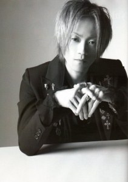

Biographie de Yukihiro
Biographie
Yukihiro est un batteur originaire de Chiba, membre du groupe de JROCK L'Arc~en~Ciel.
Lors du départ de Sakura en 1997, Tetsu lui a demandé de les aider à enregistrer leur nouveau single Niji. Lors de la sortie du single et du concert Reincarnation in Tokyo Dome, Yukihiro est toujours un membre de session.
Il a été annoncé comme membre officiel lors de la sortie de HEART. Malgré la déception de certains fans de sakura, Yukihiro s'est vite intégré au groupe.
- Nom réel : 淡路 幸宏 (Awaji Yukihiro)
- Nationalité :

- Genre : Homme
- Date de naissance : 24/11/1968
- Genre / métier : J-Rock, J-Pop, Compositeur
- Appartient au groupe : L'Arc~en~Ciel (en activité) (Batteur) (1998 -)
Profil
Surnoms : Yukki ou Yuki-chan
Groupe sanguin : A
Signe astrologique : Sagittaire
Rôle dans L'Arc~en~Ciel : guitariste, chanteur (seconde voix), compositeur, auteur
Taille : 165cm
Poids : 48 kgs
Auteur et/ou compositeur : trick, L'heure, Cradle, New world, spiral, Drink it down, l'ensemble des remixes de l'album ectomorphed works (en seulement 7 jours)...
Carrière solo : Acid Android (chanteur, guitariste)
Hobbies : regarder la télé, batterie, jeux vidéos, D. J., Evangelion
Marque de cigarettes : Seven Stars
Couleurs favorites : noir et rouge
Nourriture préférée : chocolat, Coca-Cola, nourriture japonaise
Marque de vêtements : Hysteric Glamour (même styliste que tetsu)
Rêve d'enfant : batteur de rock
Famille : parents, jeune sœur